Функция "Архив"
В данной функции можно создать, просмотреть и изменить содрежание архивов (расширение *.apk, *.apkw).
Архив - хранилише неизменяемых программ контроля (расширения: *.opk, *.opkw).
Путь и вызов
Нахождение в программе
Верхнее меню → "Файл" → "Открыть архив"
Горячие клавишы
Ctrl + Shift + OНа изображении показано нахождение данной функции в программе:
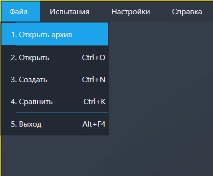
Действия после нажатия
Чтобы начать работу с архивами нужно 2 раза кликнуть по надписи «Архивы» в левом столбце (рисунок 2).
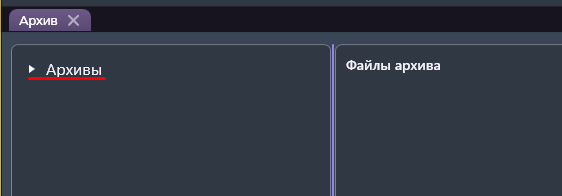
Откроется список доступных архивов (рисунки 3 и 4).
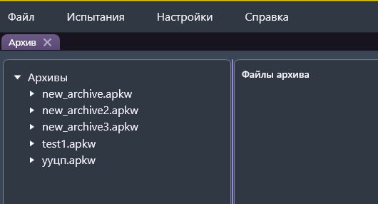
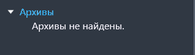
Создание архива
Создать архив можно вызвав функцию "Создать архив" в верхнем меню (появляется если ранее была использована функция "Открыть архив") или же нажать правой кнопкой мыши по пункту «Архивы» и в открывшемся контекстном меню нажать кнопку «Создать архив».
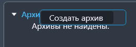
После откроется окно с доступными архивами, где нужно нажать на кнопку "Создать архив".
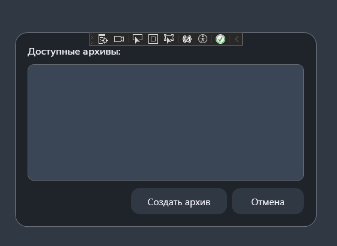
Тогда перед пользователем откроется окно ввода названия архива.
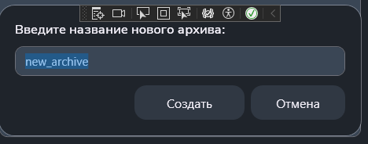
После успешного создания архива в правом верхнем углу появится уведомление, а в дереве архивов отобразится только что созданный архив.
Открытие/удаление архива
Далее нужно выбрать архив, с которым пользователь будет работать. Для этого нужно или кликнуть по треугольнику, располагающемуся левее названия архива. Тогда раскроется дерево файлов архива.
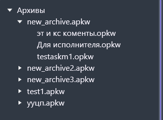
Также можно кликнуть по названию архива ПКМ. В открывшемся контекстном меню можно открыть или удалить архив.
Открытие/удаление файла архива
После выбора файла в нижней части правой рабочей области появится содержимое выбранного файла.
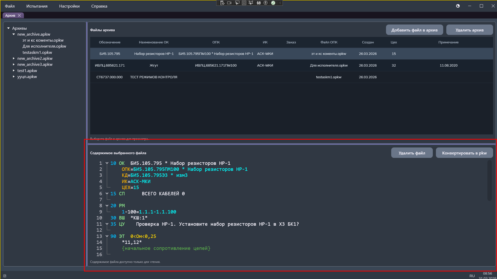
При открытии файла есть возможность удалить выбранный файл из архива. Для этого нужно нажать кнопку «Удалить файл». Ещё удалить файл можно через левое меню (рисунок 8), нажав на него ПКМ.
Действия с архивом
После успешной трансляции файла в строке с названием файла появляются 2 кнопки: «Сохранит странслированный файл в архив» и «Сохранить на диск».
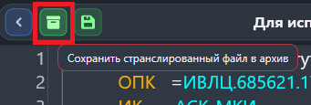
При нажатии на кнопку (обведена на рисунке 10) откроется окно выбрать архив, в который будет сохранен странслированный файл.
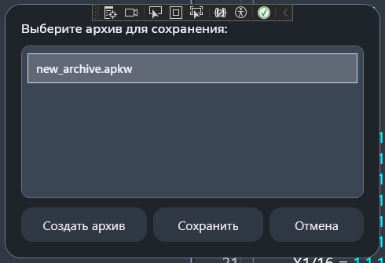
После успешного добавления файла в архив появится уведомление в правом верхнем углу рабочей области.
Работа с файлами архива
Файлы opkw можно скопировать из одного архива в другой. Для этого нужно нажать на соответствующий пункт либо в контекстном меню (открывается наведением мыши и нажатием на ПКМ), либо в области просмотра.
Также файл можно вырезать из одного архива и вставить его в другой.
Затем скопированный или вырезанный файл можно вставить в нужный архив. Для этого нужно кликнуть ПКМ по нужному архиву в дереве архивов и выбрать нужный пункт в меню, либо на соответствующую кнопку в области просмотра файла. Также кнопка «Вставить» отображается над таблицей с файлами архива.
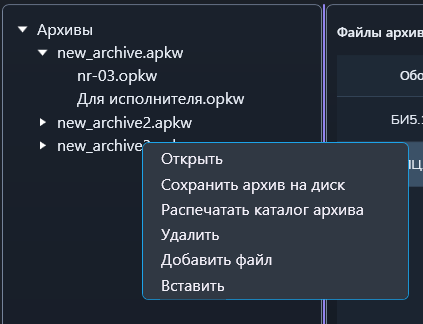
Каталог архива
Каталог архива можно вывести на печать.
Для этого нужно кликнуть ПКМ по нужному архиву в дереве архивов (рисунок 13)
или по кнопке над таблицей с файлами открытого архива.
В открывшемся контекстном меню нужно выбрать пункт "Распечатать каталог архива".
Импорт/экспорт архива
Архив можно сохранить на диск (экспортировать). Для этого нужно нажать на соответсвующую кнопку (рисунок 13) в контекстном меню выбранного архива или над таблицей с файлами архива.
Также, архив можно загрузить (импортировать). Для этого нужно кликнуть по соответствующему пункту в меню "Файл" или в контекстном меню архивов.
Также, при необходимости можно экспортировать все архивы, которые есть в хранилище. Для этого нужно кликнуть по соответствующему пункту в меню файл или в контекстном меню архивов.